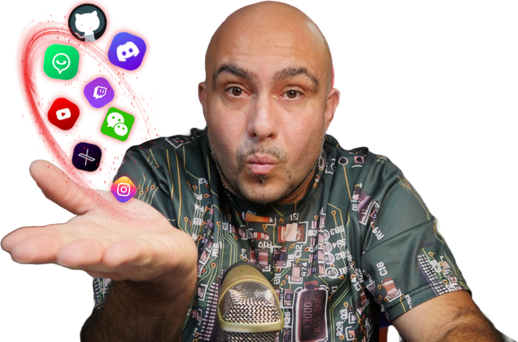

body {
 background: #FFEBEE
}
<p style="text-align: center; background-color: silver;"> <big><big> Diegooz GitHub Web Projects </big></big><br>
<br>
<big><big>Visit my<a href="https://diegopellacani.altervista.org/">Site/Blog</a><br>
Visit my<a href="https://www.youtube.com/@PixelsSquad">YT Channel</a><br>
Visit my<a href="https://github.com/Pixelssquad">Github page</a></big></big>
</p>
<h3 style="text-align: center; background-color: silver;"><big>
<strong></strong></big></h3>
<hr style="width: 100%; height: 2px;">
<h3 style="text-align: center; background-color: rgb(255, 204, 153);"><big><strong></strong></big></h3><table style="text-align: left; width: 100%;" border="0" cellpadding="2" cellspacing="2"><tbody><tr><td style="vertical-align: top; background-color: rgb(102, 102, 102);"><br></td><td style="vertical-align: top; background-color: rgb(102, 102, 102);"><h3 style="text-align: center; background-color: rgb(255, 204, 153);"><big><strong><big><strong>Sections</strong></big></strong></big></h3>
</td><td style="vertical-align: top; background-color: rgb(102, 102, 102);"><br></td></tr><tr><td style="vertical-align: top;"><br></td><td style="vertical-align: top; text-align: center;"><big><a href="file:///nerdminerideaspark">IdeaSpark-ESP32 NerdMiner Web Installer</a></big></td><td style="vertical-align: top;"><br></td></tr><tr><td style="vertical-align: top;"><br></td><td style="vertical-align: top; text-align: center;"><big><a href="file:///nerdminerCYD24">CYD 2.4" (Valerio) NerdMiner Web Installer</a></big></td><td style="vertical-align: top;"><br></td></tr><tr><td style="vertical-align: top;"><br></td><td style="vertical-align: top; text-align: center;"><big><a href="file:///ade003">Adeept Smart Car ESP32 Test - Web Installer</a></big></td><td style="vertical-align: top;"><br></td></tr><tr><td style="vertical-align: top;"><br></td><td style="vertical-align: top; text-align: center;"><big><a href="ResetESP32/index.html"><span>ESP32
Dev Module
Reset to Factory
Settings (not for ESP32 c3/s3/etc)</span></a></big></td><td style="vertical-align: top;"><br></td></tr></tbody></table>
<hr style="width: 100%; height: 2px;">
<h3 style="text-align: center; background-color: silver;"><big><strong></strong></big></h3>
<p style="background-color: silver;"><big> <strong></strong>
</big></p>
<p style="text-align: center; background-color: rgb(153, 255, 153);"><big>
<a href="/nerdminerideaspark"><br></a>
</big></p>
<p style="text-align: center; background-color: rgb(153, 255, 153);"><big>
<a href="/nerdminerCYD24"><br></a>
</big></p>
<p style="text-align: center; background-color: rgb(153, 255, 153);"><big>
<a href="/ade003"><br></a></big></p>
<p style="text-align: center; background-color: rgb(153, 255, 153);"><big><a href="ResetESP32/index.html"><span></span><br>
</a> </big></p>
<p style="text-align: center; position: absolute; left: -35px; top: 8px;">
<a href="#">.</a> </p>
